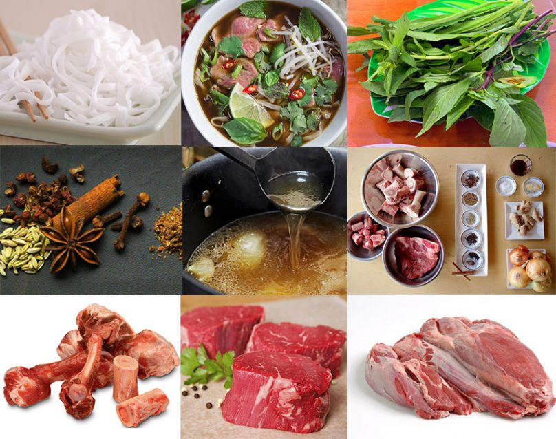

Discover the Best Vietnamese Pho!!!
From Vietnam to the World.
Phở Gà (Chicken Pho) is a Vietnamese soup made with chicken. Similar to Phở Bò, it features a fragrant broth, but it uses chicken instead of beef. The broth is typically made by simmering a whole chicken with ginger, onions, and spices such as star anise and coriander seeds. The result is a lighter yet equally flavorful soup. Slices of chicken, rice noodles, and fresh herbs like cilantro and green onions are added to the broth. Like Phở Bò, it is often served with bean sprouts, lime wedges, and chili slices on the side for added flavor and texture.
Phở Bò (Beef Pho) is a traditional Vietnamese soup made with beef. It's known for its aromatic broth, which is typically simmered for hours to develop a rich, deep flavor. The broth is made by simmering beef bones with spices like star anise, cloves, cinnamon, and cardamom. Thin slices of raw or cooked beef are added to the broth along with rice noodles, and the dish is garnished with fresh herbs like basil, cilantro, and green onions. Bean sprouts, lime wedges, and chili slices are often served on the side to add as desired.